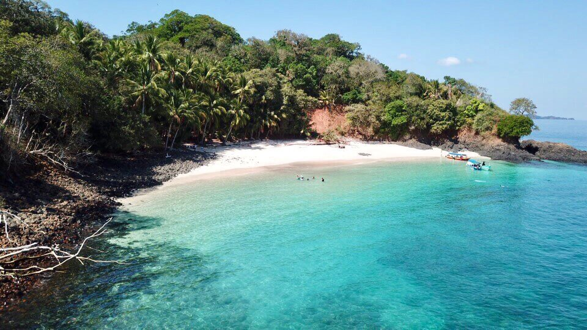
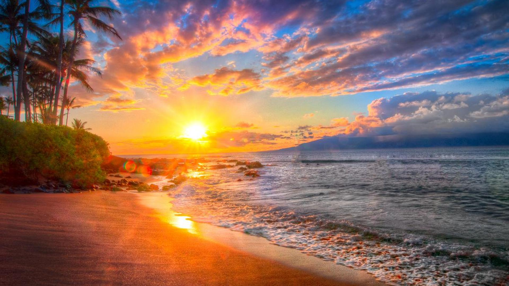

- 
-

-

- 
Que hacer en la isla:
Isla Gámez está ubicada dentro del Parque Nacional Marino del Golfo de Chiriquí, el cual es un área protegida por el gobierno panameño para preservar sus valiosos recursos naturales. Esta es una hermosa isla rodeada de árboles y palmeras. Cuenta con dos playas de arena blanca, que se interconectan entre sí por medio de un banco de arena. Llama la atención sus cristalinas aguas, que invitan a sumergirse en ellas. Es el lugar perfecto para relajarse y pasar en compañía de familiares y amigos.
Sugerencias:
Isla Gámez es una isla inhabitada y remota, por lo que le sugerimos llevar agua embotellada y bebidas de su preferencia, además de comida o snacks. Un buen protector solar es esencial para evitar quemaduras en la piel, debido al fuerte sol en nuestro país.
Tiempo del tour:
La salida de Boca Chica hasta Isla Gámez toma alrededor de 40-50 minutos. En este recorrido usted podrá apreciar la belleza de diferentes islas como Isla Boca Brava, Isla Palenque, Isla San José. También podrá observar lindas aves y especias marinas durante el tour.